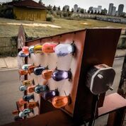
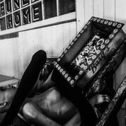
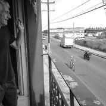
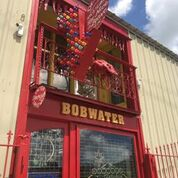
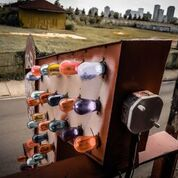
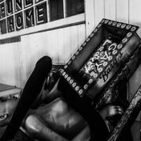
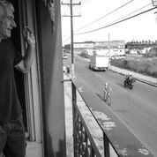
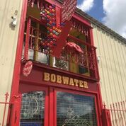

Dr. Bob uses thematic images in his work. Scroll through the photos throughout his site and you will see Catahoula Cur Dogs, gators, juke joints, landscapes, mojo hands, shotgun shacks, snowball stands, & soul food meccas, combined and repeated in paintings, carvings, shrines, assemblages, decor, and installations.
Dr. Bob Art sells locally, nationally, and world-wide. Most of the art on the website has already been sold. Contact Dr. Bob today & have him make some art for YOU! Price is determined by size and complexity.
In Building B of the Superior Court of the District of Columbia, following a $40 million renovation of the old court building, hangs Dr. Bob’s American Flag on vintage ceiling tin. The pieceis framed with the text of “America the Beautiful”and “Be Nice or Leave.”
The Flag is Prominently displayed in the public meeting area, just adjacent to the Judge’s Chamber entrance as a daily remind of either our Nation or Dr. Bob –you pick!
 






